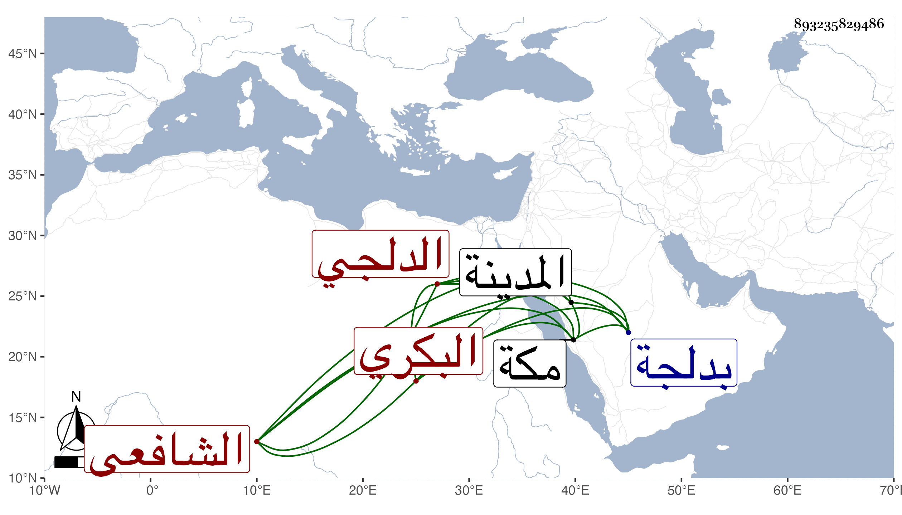

0902Sakhawi.DawLamic.ITO20230111-ara1.EIS1600.893235829486
Biography ID: 893235829486
490
محمد بن محمد بن محمد بن أحمد بن يوسف الشمس أبو عبد الله بن الشمس أبي عبد الله بن المحيوي المدعو بشفيع بن القطب أو الشهاب بن الجمال البكري الدلجي الشافعي والد محمد الآتي وصهر الشهاب الدلجي على أخته واحدة بعد أخرى وأخو أبي يزيد لأمه . ولد في سنة ثلاث وأربعين بدلجة ونشأ فحفظ القرآن والرحبية في الفرائض وألفية النحو ومختصر التبريزي أو أبي شجاع واشتغل عند صهره وغيره وأقام بمكة تسع سنين على طريقة حسنة من الاشتغال والكتابة وتعليم الأبناء والإقبال على شأنه وأخذ بها عن النورين ابن عطيف والفاكهي والشمس المسيري وعبد الحق السنباطي ولازمهم في الفقه والعربية والفرائض وغيرها وقرأ المنهاج تبمامه بحثا بالمدينة النبوية على الشهاب الإبشيطي ، ووقف عليه نسخة منه وكذا لازمني حتى أخذ عني شرحي للألفية سماعا في البحث والقول البديع قراءة وحصلهما مع غيرهما وأكثر وكتبت له إجازة حسنة أوردت جلها في التاريخ الكبير ثم رجع إلى بلده ملازما طريقته في الخير والتواضع ولين الكلمة والرغبة في المعروف .
